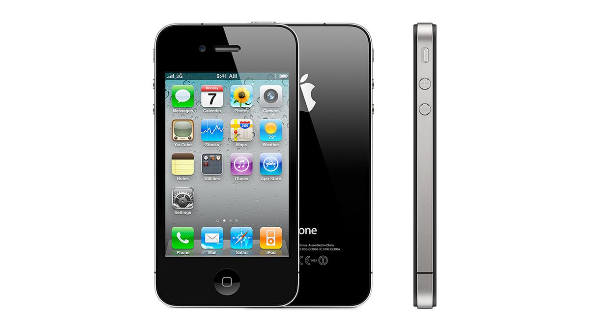

The IPhone 4 was released in April 2011. Storage was either 8, 16, or 32GB. This phone was made with a glass front and back with stainless steel edges. They served as antennas. However, people reported that if they held their phones a certain way they would not get signal.
